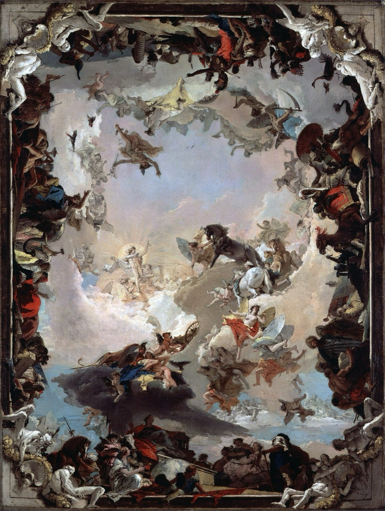

deva
the god realm
"He has achieved a kind of self-hypnosis, a natural state of concentration which blocks out of his mind everything he might find irritating or undesirable." — Chögyam Trungpa, Cutting Through Spiritual Materialism

the shape of the trap
So the realm of the gods is not particularly painful, in itself. The pain comes from the eventual disillusionment. You think you have achieved a continually blissful state, spiritual or worldly; you are dwelling on that. But suddenly something shakes you and you realize that what you have achieved is not going to last forever.
— Chögyam Trungpa, The Myth of Freedom
… the god realm concerned with self-infatuation, pride, intoxication of fabricated experience, and indifference to others …
— Martin Lowenthal & Lar Short, Opening the Heart of Compassion
The essence of the god realm is "I am right, and that's just how it is." It's about pride.
— Ken McLeod, Wake Up to Your Life (six realms practice)
The gods enjoy perfect health, comfort, wealth and happiness all their lives. However, they spend their time in diversions and the idea of practising Dharma never occurs to them… Then, having wasted their whole life in distraction, they are suddenly confronted with death.
— Patrul Rinpoche, The Words of My Perfect Teacher
texture
poem
The Lotos-Eaters — Alfred, Lord Tennyson
All things have rest: why should we toil alone … There is no joy but calm!
— the Choric Song
novel
Brave New World — Aldous Huxley
Christianity without tears — that's what soma is.
— Mustapha Mond
"But I don't want comfort. I want God, I want poetry, I want real danger…" "In fact," said Mustapha Mond, "you're claiming the right to be unhappy." "All right then," said the Savage defiantly, "I'm claiming the right to be unhappy."
— chapter 17
tv
The Good Place, season 4 — Michael Schur
Picture a wave, in the ocean… and then it crashes on the shore, and it's gone. But the water is still there. The wave was just a different way for the water to be, for a little while.
— Chidi Anagonye
dispatches
Via the community archive.
In the god realm, you try to "just" already be the antidote to suffering. But skipping to the end doesn't work. A Bodhisattva first descends into the lower realms to take on the shape of others' suffering.
God realm easily flips into hell realm since it shares much structure only with the valence inverted.
The notion of heavenly realms encourages hungry ghosts and carries the danger of flipping over into hell realms when its karma is exhausted. The human realm is better than the heavenly realms because it is where awakening occurs.
Reading into it: the internet of the millenial childhood was a god realm. The karma ran out and now it's a hell realm.
"Nowhere to go, you are already awakened, you can't unbreak a mirror, Samsara is Nirvana" etc. are just meditation instructions.
They are not reality.
Only in a God Realm delusional state you get the compelling illusion that suffering is itself illusory and there's nothing more to do. It isn't an illusion. And there is work to do, things to achieve, suffering to relieve, insights to have, help to provide, and knowledge to clarify.
the door
Rest is the conversation between what we love to do and how we love to be.
— David Whyte, Consolations, "Rest"
This drunkenness began in some other tavern. When I get back around to that place, I'll be completely sober.
— Rumi, "Who Says Words With My Mouth?" (trans. Coleman Barks)
The wisdom of appreciating experience, the good of stabilizing things, and reveling in the act of creation resides in the god realm.
even here, a buddha
In the god realm the awakened one is called Indra Kaushika, and he carries a lute — the gods will not listen to a sermon, but they will listen to music, and the song he plays them is impermanence.
The gates are not locked.
☸ the six realms · may all beings be free